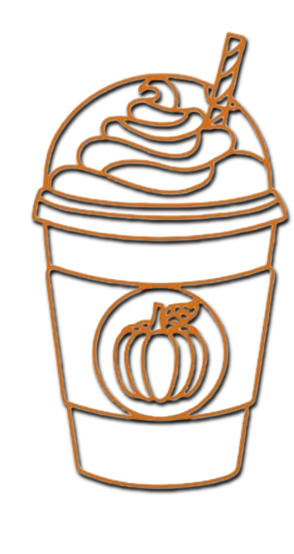
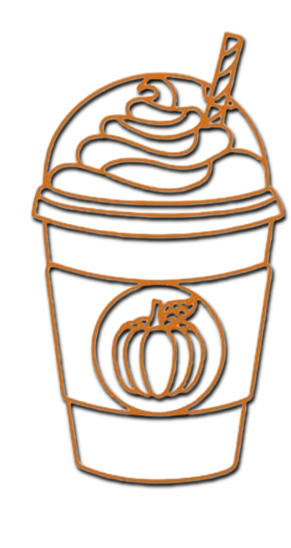

Bez Saxara's Family Constitution
Romance:
Both pumpkin and banana say "I love you" at the end of every call or prior to departure from a lover.
A 4-second kiss given if the leave is for more than a few hours long.
Hearts need a date one day a week to keep love at its peak.
Communication remains free of jokes or mentions of divorce for a positive outlook on the future.
Pumpkin may dress as she wishes, if safety is assured by banana or her besties.
Family:
Bed with comfort need no phones within reach, as the night is reserved for joyful rest.
Even in the heat of disagreement, no cursing and no name-calling to respect and understand.
Conflict disagreements are kept private, away from children, relatives, and the public.
Teach financial literacy to all family members, including children from an early age.
Banana is a storyteller when children are going to bed.
Household chores are a shared responsibility between pumpkin and banana.
 
Banana Bread and Pumpkin Latte